開展那天，
93件化石一件都不能遲到 熱河生物群特展
《熱河生物群特展》展出來自中國遼西地區、距今約1.25億年前中生代白堊紀早期的珍稀化石標本，由科博館與財團法人國立自然科學博物館文教基金會及北京自然博物館共同策劃，是20世紀最重要的古生物發現之一在臺灣的正式展出。展覽分為「走進熱河生物群」、「遇見熱河生物群」、「見證龍飛上天的證據」三大展區，展出攀援始祖獸、顧氏小盜龍等93件珍稀化石標本，包括中國首具鸚鵡嘴龍木乃伊化石、展區最大型的錦州龍化石，以及羽毛黑色素顆粒完整保存的顧氏小盜龍標本–為研究恐龍演化為鳥類，提供了關鍵的科學物證。我們擔任本案施工單位，負責把科博館既有展廳空間，改造成符合國際學術合作展覽規格與化石文物展示條件的專業展示場域。
這批標本屬於跨國借展的珍貴化石文物，展場裝修須符合博物館文物展示的溫濕度、防震、防塵等基本條件，確保借展文物在展期間的安全與完整。現場裝修也配合「走進→遇見→見證」三大展區的敘事架構分區施作，引導觀眾循序漸進理解熱河生物群的科學脈絡；化石標本大多需要搭配專業展示櫃體與圖文說明系統，施作時得同時兼顧文物保護規範跟觀展視覺效果，兩件事一樣重要，不能顧此失彼。
時間沒有彈性，只能從開展日往前倒推
這是一場跨國學術合作展覽，開展日期已經對外公告，沒有彈性可言。我們得從那個固定的日子往前回推–布展需要多久、化石標本進場需要多久、展示櫃定位需要多久–把裝修工程壓縮進一個固定期程內完成，還得預留足夠的布展緩衝，確保無論如何都能如期開展。93件來自億萬年前的化石，最終準時抵達了它們在臺灣的展廳。
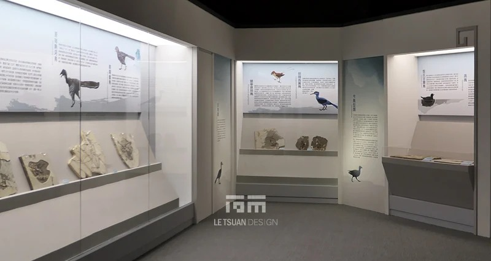
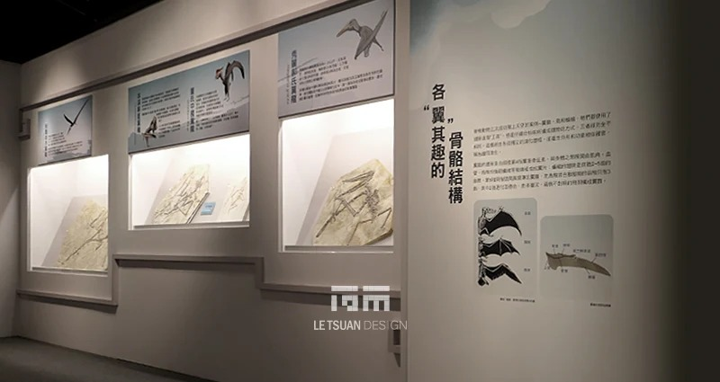
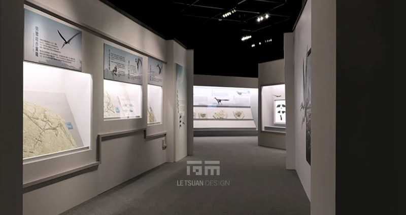
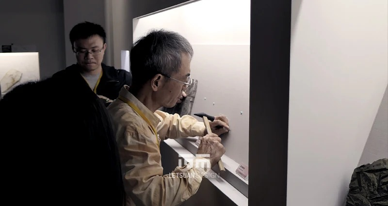
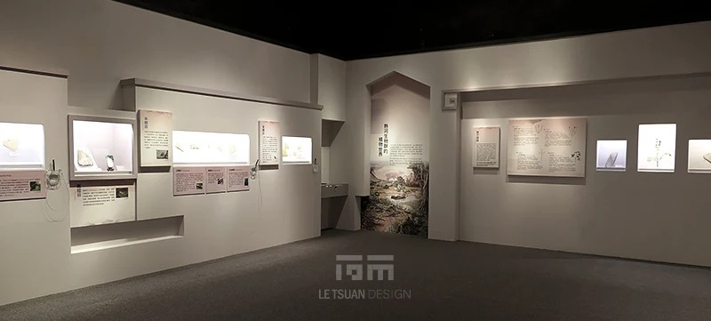
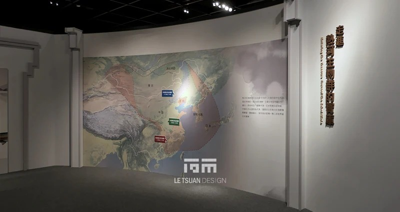
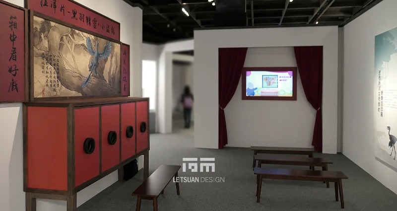
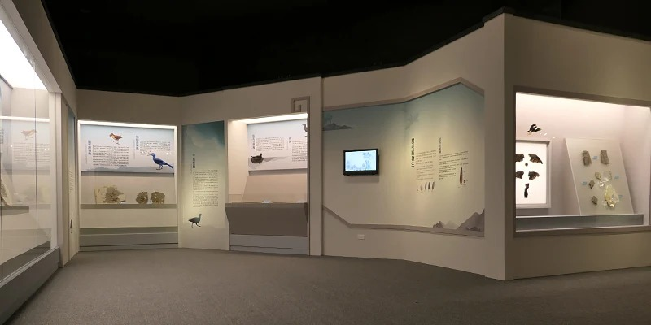
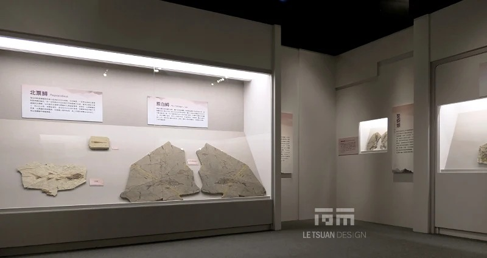
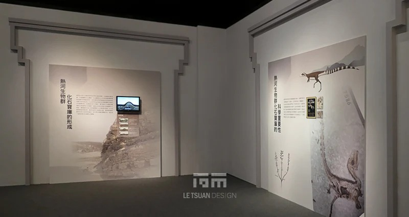
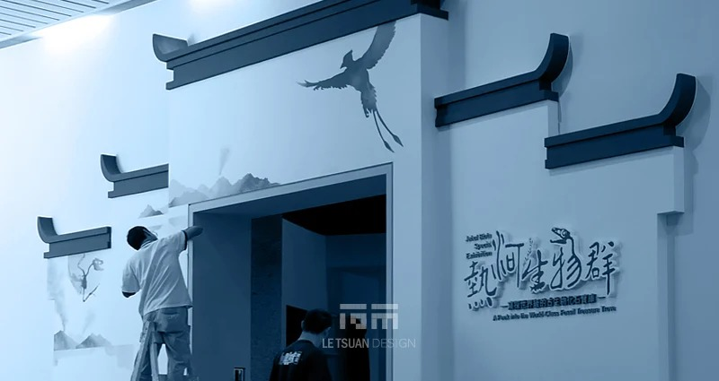
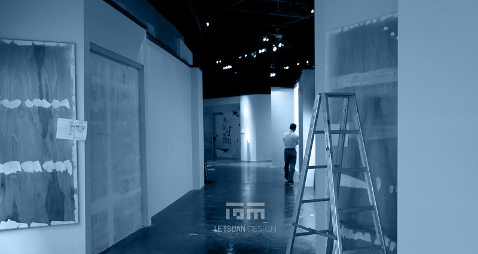